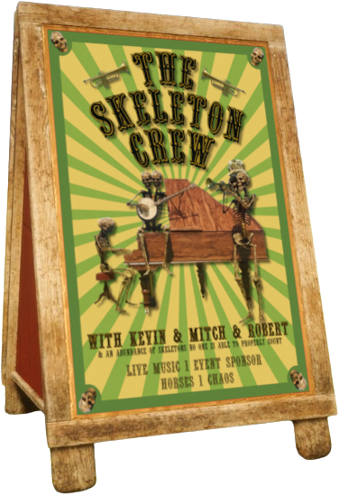

THE MEATY TIMES IS FINALLY RELEASED
A new weekly newspaper for the GGI Equestrian server sees light for the
first time!
Picture taken by Angel (@honeypluto)
The one and only Meat Lord is here with another addition
to the Meaty World™! This newspaper will be updated every sunday and will adress important events that
ocurred during the week.
For the time being there will be four different sections: people, world, events,
and meaty world updates, where each one will have their own articles. Expect more sections in future editions!
An additional category, archive, will preserve the past editions in PDF so that they
are always accesible.
Remember you can submit your own articles or ideas (for me to write), and will be
payed 300-2000$ for each one you submit!
- Bubu The Meat Lord 🥩🎪
World
The most beautiful and true-loving wedding has been disrupted.
The Silly Meaty Circus has had its first live show.
People
Balds strike again. Florence Miller wanted dead or alive. Tiny man. The cow-licker. The seducer. Peeping Tom.
Free falling. Mad Miller. Cougar attack.
Events
Pink Week: The slayest and most fabulous dressage show and trail ride.
Epic: The Musical Trail.
Meaty World Updates
A new meaty cinema is in the making...
Did someone say something about an upcoming Bald Genesis movie?
STRANGE PILED CREATURE SIGHTING
A strangely well balanced creature has been sighted in the swamps of Bayou Nwa and Rhodes area.
Picture taken by Jeremiah Carson
Jeremiah Carson was in his daily walk through the swamps of Bayou Nwa to
meet his alligator friends when all of a sudden he was interrupted by a strangely
well balanced creature formed of seven cows, Kevin and Uncle.
"That creature was horrifying!", Jeremiah said, "That balance work is actually so
impressive... i may discuss this with my fellow friends", an alligator said.
Some witnesses later saw the creature at Braithwaite Manor, trying to get into the building
and even climbing to the roof.
Please if you encounter this creature don't get too close and report it to
your nearest sheriff office.
A WEDDING HAS BEEN STOPPED!
The most precious and true love between Meat Lord and Caspian Yearwood
saw their plans interrupted by two members of the bald gang.
Meat Lord and Caspian Yearwood were decided to marry at Braithwaite Manor, but two members of the bald gang,
Rei Silver and Florence Miller, decided to interrupt the wedding and prevent the two lovebirds to achieve
their dreams.
Witnesses claimed the event took a very violent turn, with fire and explosives used as weapons.
"We at Braithwaite Manor were so happy for the pair, they looked perfect for each other, but those balds ruined
everything.", said Agatha Braithwaite, resident of the manor.
Not too far from the manor, two bodies were found hogtied and drowned on the shore, and a third body was
found underwater, although their remains later disappeared...
🎪 SILLY MEATY CIRCUS FIRST LIVE SHOW 🎪
The Wondrous Silly Meaty Circus has officially carried out their first live show as the closing performance
for the slayage dressage show.
The Wondrous Silly Meaty Circus has done an outstanding performance for their first live show! You could
find everything there: a giant cow, a chicken dancing, boars balancing on giant golden balls, a multicolor
horse... show-stopper!
"This is only the beginning, The Wondrous Silly Meaty Circus will soon host a longer and more varied
performance, stay tuned!", said The Meat Lord, current owner of SMC.
"Breathtaking. Innovative. Delightfully Meaty. An Overall absolute slay. 10/10, there were (shiny)
balls.", said Jay Siren, host of the slayage dressage show.
Seems the Silly Meaty Circus is slowly gaining recognition among the locals!
THE BALDS CLAIM ANOTHER VICTIM
A report has been made about three more official victims of the balds.
Picture taken by Arttie (@.arttie)
This week the balds have been more active than ever. Three new victims have
been officially claimed by them: Belle Delaney, Caspian Yearwood and Kermit.
They seem to operate under suspicious matters, and they are known to manipulate their victims to convert
them into one of them, seeking for their vulnerabilities and giving their victims no other option than to
convert.
Caspian Yearwood and Kermit have reported having to convert to baldism so they
could be resurrected, leaving them with no other choice.
They claim they aren't concerned about their new identity and that they really enjoy
it, which sadly indicates they are under they spell.
Please be careful and avoid them at all costs.
BALD BELLE
Belle Delaney has converted to baldism.
Belle Delaney has accepted a deal with Rei Silver where she would get a
buzzcut for 5.500$.
She is now a converted bald and you should proceed with caution whenever you
approach her.
Please be safe and don't make deals with Rei Silver.
WANTED
Florence Miller, dead or alive.
This pesky human is wanted in several regions as Valentine, Saint Denis,
Armadillo, Blackwater, Ambarino and Barbieland. They are known to have started fires and
stampedes, crashing into everyone and lassoing innocent people. Melissa, one
of their victims, claims not having provoked them but get lassoed and pushed
several times.
They are considered armed and dangerous. If you sight them report it to your nearest
sheriff office.
TINY MAN
A violent tiny man has been reported.
A very angry and tiny man has been found causing havoc in Braithwaite Manor. He had an arsenal of weapons
which for some reason were not sized accordingly to the tiny man's size.
Be careful as he is considered dangerous and volatile, as lassoing or shooting him are known to cause major
explosions.
THE COW-LICKER
Caspian Yearwood caught red handed.
Caspian Yearwood has been found licking some cow's udders in pursuit of
her milk, assuming it is what they were looking for...
Rest assured the local authorities have been already notified, but you
shouldn't let your cows roam freely without supervision until this matter
is totally sorted.
If you are friends with Caspian Yearwood, please take care of them and urge them to go to therapy.
THE SEDUCER
Caspian Yearwood caught red handed again.
Caspian Yearwood has been found, again, acting in a suspiciously way. This time they were
found seductively dancing to two Guarma locals in the Guarma beach after the famous Pink trail ride.
"I was just chilling in the beach with my friend Fernando, when all of a sudden a twink approached us and
started dancing very seductively in front of us. I have a wife and two kids, you know? but somehow I was
mesmerized and couldn't move or think...", said Emilio García, one of Caspian's victims.
PEEPING TOM
Is Kermit a peeping Tom?
A report has been made against Kermit, claiming to be peeping Caspian Yearwood in the fitting room of
Blackwater's clothing shop, and media evidence has been sent to the authorities.
Kermit has proclaimed himself innocent as he states he saw the door slightly open and wanted to check if
someone was already inside before coming in, as he also wanted to buy clothes.
An official statement from the sheriff office of Blackwater has not been made yet. In the meantime, be cautious
and don't forget to properly close your door whenever you are in a fitting room.
FREE FALLING
Rueben Marsh jumping from a waterfall.
Rueben Marsh has been photographed rublin' around with some friends in a waterfall.
The group were found carrying out risky activities where they dared each other to jump from
the top of a waterfall. So far no one has suffered any major injuries, but be careful with these type of
reckless youngster activities.
MAD MILLER
Florence Miller found chasing poor Kermit.
Florence Miller was found throwing a tantrum and unprovokedly chasing poor Kermit who was just enjoying the
view at the rodeo arena.
Kermit declared that Florence said they were mad because Melissa kept teasing them, but we also talked to
Melissa, who stated that she is one of the best behaved creatures in the world and that she would never act
like that.
COUGAR ATTACK
Florence Miller attacked by a cougar.
Florence Miller was violently attacked by a wild cougar while participating in a western competition just
outside the rodeo arena near Macfarlane's Ranch.
He was rapidly sent to the hospital seriously injured and screaming in pain like a little kid. Doctors say
they will recover just fine but will need rehabilitation for a few weeks.
THE PINKIEST AND MOST FABULOUS TRAIL
A pink army has been seen around the county in a trail ride hosted by Caspian Yearwood.
Picture taken by Arttie (@.arttie).
Caspian Yearwood hosted the slayest and pinkiest trail ever celebrating the new Sire's stable update,
which brought over 200+ recolors of almost all the horse tack items!
This trail involved a wide variety of pink-colored outfits and slaying drag songs, which ended up making the
participants sing to the top of their lungs throughout the entire journey.
The pink army then decided to end their iconic ride at Guarma's beach. The locals were stunned when they saw
shiny pink-colored people approaching.
"At first I thought they were an actual army trying to invade us, but then
they started dancing at the beach with some loud tunes that actually sounded pretty cool", said Emilia Romero, Guarma resient.
THE SLAYAGE SHOW IS HERE!
This dressage show hosted by Jay Siren brought some breathtaking outfits and iconic tunes.
YEC The Majestic Mojo Dojo Casa House, winner of the slayage.
Picture taken by Arttie (@.arttie).
The formal ACE's sugar daddy, Jay Silver, hosted the slayest dressage show ever! Each participant dressed
with extraordinary outfits and danced with their horses to some of the best tunes in the world!
The participants, Caspian Yearwood, Belle Delaney, Florence Miller and Laurie Wilson (in order of placements),
performed spectacularly and their horses seemed to be dancing effortlessly!
"It was all YEC The Majestic Mojo Dojo Casa House, really! He was the one who poured blood, sweat and tears into
getting that masters in
c💅ntology from the University of Slayborough.", said Caspian Yearwood, winner of
the Slayage Dressage Show with their horse who was lovely nicknamed as garden granny.
EPIC: THE MUSICAL TRAIL
A trail ride with Jorge Rivera-Herrans musical adaptation of Homer's Odyssey!
Caspian Yearwood hosted a magnificent and epic trail ride in honor of Jorge Rivera-Herrans fantastical
adaptation of one of the best epic poetries ever, Odyssey by Homer (not The Simpsons one).
The trail followed the beat of the songs and the ambient ressembled the one the songs were expressing. It
was so interactive to the point where "Barold" and an army made an appearence, representing Polyphemus and
trojans.
The trail then hopped on canoes and made their way down through very large waterfalls and rocky obstacles,
making it a truly epic and heroic experience!
UPCOMING CINEMA AND MOVIE
Some bald lore was spontaneously created and JK was filming the entire thing without noticing...
I already planned on doing a Meaty TV (MTV) section on the website because I wanted to make some videos and
even films about the meaty circus or other things... but things changed priority when JK realized they had
an hour long video about all the senanigans we were doing on the server... so expect a TV-styled website
(like an actual TV hehe) in the next few weeks hehe.
I'm even planning on doing video ads for the MTV hehehe, just imagine a 5-10 second video ad about the bald
gang just before the bald genesis upcoming movie starts...
FLIP BOOK
Furniture catalogue to an online flip book.
I plan to make a new version of the Furniture Catalogue, this time an online flip book, which will make the
pages of the catalogue turn like actual pages and it really looks so cool.
MEMORY BOOK
Blog-style section to access pics.
The Memory Book is the next thing on my list after the MTV build and release. I plan to make an organized,
blog-style section where you can easily access the pictures from events and lore.
3D MODELLING
Custom models for the server?
This may be too much and end up only being for my personal use, as it also requires the admins and I don't
want to cause any trouble to the server stability, but I already fought with blender a few years ago when I
attempted to make a horse game on my own (lost motivation as always), but imagine a poster/board sign in the
game which displays an actual ad of a server facility... hmmmmm...
